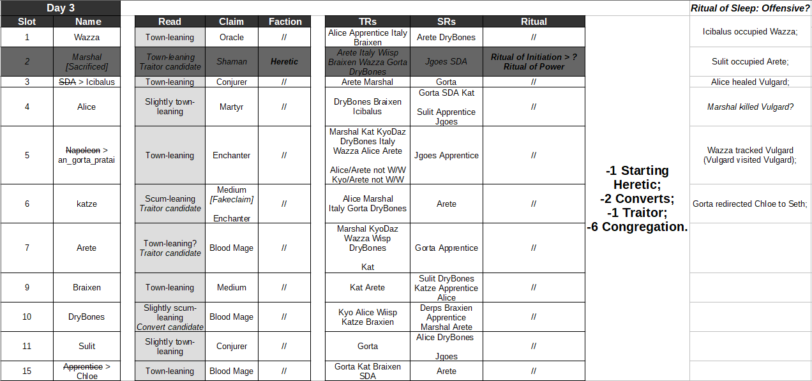

Also this aged like milk, but at least I can say that Marshal was my lowest townlean and I wasn’t completely wrong about it.
Actually I’m going to only do two slots right now because I don’t have enough willpower left.
So first things first, I would like to discuss if Marshal is starting groupscum or a converted Heretic. He has switched his claims twice throwback to when I said that he should be executed if he retracts the Minister claim too and then hinted at being converted in this post:
https://forum.imperium42.com/t/fm-ritual-mafia-iv-day-3-lynch-phase-10-16/81237/6076?u=anstreim
https://forum.imperium42.com/t/fm-ritual-mafia-iv-day-3-lynch-phase-10-16/81237/6084?u=anstreim
Not to mention that his logs contain this:
https://forum.imperium42.com/t/fm-ritual-mafia-iv-day-3-lynch-phase-10-16/81237/12374?u=anstreim
Convert marshal, and ritual marshal, and do it again,
But lets be honest, his first hint was fake since he didn’t flip Seer, and what we have here is WIFOM at its finest. Although the whole Minister charade could’ve been pre-planned since the very beginning, but I’m not going to go there.
I think right now, the chances are higher that Marshal is original Heretic. Otherwise Alice would be outed scum + he had no real reason for that whole Blood Mage/Minister FPS.
Then there are these posts which have found ISOing him. Cannot decide if this is shade or… something else. Probably shade, especially if he is original Heretic. He would’ve been self-aware enough to watch what he is saying by that point:
https://forum.imperium42.com/t/fm-ritual-mafia-iv-day-3-lynch-phase-10-16/81237/6707?u=anstreim
https://forum.imperium42.com/t/fm-ritual-mafia-iv-day-3-lynch-phase-10-16/81237/6729?u=anstreim
But the vote on Kat during Ritual phase still raises some questions.
Something miscellaneous I’ve remembered while ISOing Marshal – wasn’t he the one who was desperately trying to traitor hunt D1? That could be another reason to view him as a starter scum.
Onto reevaluations, then.
So considering he was a Shaman and there was a swap on Italy N1, I think it is very safe to conclude that the swap was on Marshal with someone else, not on Alice.
Meaning one among Alice and Arete is a Traitor at worst. Which brings us to:
Reevaluation #1 – Arete.
It is true that they had an atrocious start and basically mislynched 2 Congregation, but they sound… Not the way I would expect a Traitor to sound in this situation?
When discussing Sacrifice target, they described their slot as:
https://forum.imperium42.com/t/fm-ritual-mafia-iv-day-3-lynch-phase-10-16/81237/10575?u=anstreim
Though they did keep their own vote on themself:
https://forum.imperium42.com/t/fm-ritual-mafia-iv-day-3-lynch-phase-10-16/81237/11600?u=anstreim
https://forum.imperium42.com/t/fm-ritual-mafia-iv-day-3-lynch-phase-10-16/81237/11452?u=anstreim
They were also the one to point Marshal’s vote on Kat:
https://forum.imperium42.com/t/fm-ritual-mafia-iv-day-3-lynch-phase-10-16/81237/11574?u=anstreim
And their tone has shifted to genuinely distraught one? Maybe its bias, but there is a world where Arete is (or at least was) starting Congregation?
I’m willing to move them to townleans based on this micro-read, their current actions and some additional circumstances that are connected to Apprentice > Chloe. Speaking of which.
Reevaluation #2 – Apprentice > Chloe.
So this is another slot that the two of us wanted dead and saw as a possible groupscum, though I think in the end we both agreed that this would make more sense to kill off just because of mechanical information? The point still stands, this should’ve been executed.
That aside, with Marshal’s flip (and therefore class), we know that Chloe is most likely legitimate – or was legitimate N1. Which leads us to something I’ve already said before:
On N1, one among Alice and Arete was a Traitor at worst.
There were also these interactions where Marshal voted or accused Apprentice, which leads me to believe that he’s actually town (out of order):
https://forum.imperium42.com/t/fm-ritual-mafia-iv-day-3-lynch-phase-10-16/81237/10433?u=anstreim
https://forum.imperium42.com/t/fm-ritual-mafia-iv-day-3-lynch-phase-10-16/81237/9053?u=anstreim
https://forum.imperium42.com/t/fm-ritual-mafia-iv-day-3-lynch-phase-10-16/81237/5182?u=anstreim
There are more but you get the gist of it. Under presumption that Marshal is original groupscum, these votes make little sense if Apprentice is groupscum with him.
So… This was actually town, at some point. It doesn’t help us much because this slot can be easily converted now, but that’s what we have.
Apprentice was not OG scum, and this half-clears Alice/Arete.
Marshal being a necessary lynch at some point still holds true
I am disappoint
Oh hey, you are alive. I was worried for a bit 
Wait a second
Marshal was the convert, not starter
I was visiting my brother who’s currently in the mental hospital
Definitely following this game, but not priority
How comes? I thought it wouldn’t make much sense for Marshal to be the convert here?
I know these are just words of a random stranger on the internet, but I hope both him and you are doing alright.
Here’s the idea
Marshal’s fps was weak and lacked direction
Most of their fake claims help town more than scum
If they wanted to fakeclaim something unique as scum they should have fake claimed medium, since a minister cc would eviscerate them
I think they were starting witch doctor (I think that’s the class)
A long term plan would make more sense if scum did it (ie not weak)
Instead he awkwardly backed off like he didn’t know what he was doing
Mmmm that would make some sense since Arete proposed an interesting theory (i.e. Marshal claiming Minister just so he wouldn’t be converted because who the hell would convert an IC but here we are), although on the other hand all these plays could come from OG scum Marshal, purely because its Marshal.
He’s always chaotic.
I back off that they are convert
They are definitely starter
Wait no
My brain
No reason they are not convert
Didn’t quite process
That’s what I thought too because his D1 interactions + quick swap to Kyo + aftermath makes a lot more sense for a scum that already had this scheme in mind. At least that’s how it feels to me.
Also, this is where we are mechanical information wise.

Oh, goddamnit.
Alice definitely got converted given they are basically mech confirmed
I’m mostly worried about her inactivity because her posting has dropped by a lot since… I want to say start of D2?
Ici / Wazza makes sense since ritual of sleep went off yesterday on offensives